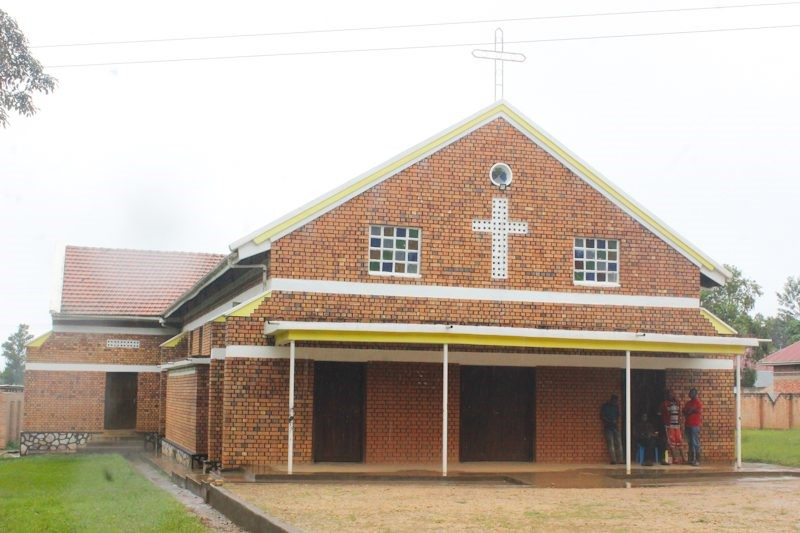

One Family, One Faith

You're warmly welcome to Ssanje Parish. We are a loving faith community united in prayer, fellowship, and service. We invite you to journey with us as we grow together in faith and love.
Ssanje Parish serves the community through multiple institutions dedicated to holistic development.
Practical agricultural training and skilling for employability and agro-entrepreneurship.
Learn More →Comprehensive healthcare services for the community including maternity and outpatient care.
Learn More →Comfortable accommodation, conference facilities, and catering for retreats and events.
Learn More →Audible Voices and GFDI — mental health, rehabilitation, sustainable agriculture, and community transformation.
Learn More →Join us for the annual celebration of our patron saint with special mass, processions, and community activities.
Applications are now open for the new semester. Both formal and non-formal courses are available.
St. Jude Health Centre conducted a free health screening and immunization campaign in the community.
Discover everything Ssanje Parish has to offer.
Our history, mission, leadership, and the story of Ssanje Deanery.
Read more →Photos, videos, and documents from our activities and events.
Browse media →Meet the organisations and individuals supporting our mission.
See partners →Your generous donations help us continue our mission of evangelization, healthcare, and community development.
Donate now →